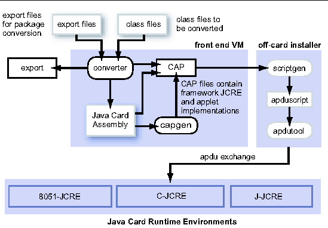

| Development Kit User's Guide, Java Card Platform, Version 2.2.2 |
| Development Kit User's Guide, Java Card Platform, Version 2.2.2 |
| C H A P T E R 1 |
|
Introduction |
The development kit for the Java Card Platform consists of a suite of tools for designing Java Card technology-based implementations and developing applets based on the Application Programming Interface for the Java Card Platform, Version 2.2.2. A set of samplesis also provided.
Any implementation of a Java Card runtime environment (Java Card RE) contains a virtual machine (VM) for the Java Card platform (Java Card virtual machine), the Java Card Application Programming Interface (API) classes, and support services.
The binary development kit release ships with one Java Card RE, cref, the C-language Java Card RE binary, which is written in the C programming language and simulates a Java Card platform reference implementation. The C-language Java Card RE implements the ISO 7816-4:2005 specification, including support for up to twenty logical channels, as well as the extended APDU extensions as defined in ISO 7816-3.
The C-language Java Card RE was designed to simulate a dual T=1 contacted and T=CL contactless concurrent interface implementation of the Java Card environment, with the capability to operate on both interfaces simultaneously.
Using the development kit's suite of tools is described in Converting Java Language Classes.
Java programming language source can be converted into APDUs for use on a Java Card technology-enabled smart card. The data flow starts with Java programming language source being compiled and input to the Converter. The Converter tool can convert classes that comprise a Java package to a converted applet (CAP) or to a Java Card technology-based Assembly (Java Card Assembly) file.
A CAP file is a binary representation of converted Java technology package. A Java Card Assembly file is a human-readable text representation of a converted package that you can use to aid testing and debugging. A Java Card Assembly file can also be used as input to the capgen tool to create a CAP file.
CAP files are processed by an off-card installer (scriptgen). This produces an APDU script file as input to the apdutool, which then sends APDUs to a Java Card RE implementation.
Not shown in the figure is the tool capdump, which produces a simple ASCII version of the CAP file to aid in debugging. This figure shows other implementations that might be available in other products, such as the J-language Java Card RE and 8051-Java Card RE.
FIGURE 1-1 Java Card Platform Conversion
| Development Kit User's Guide, Java Card Platform, Version 2.2.2 | 3-14-06 |
Copyright © 2005, Sun Microsystems, Inc. All Rights Reserved.